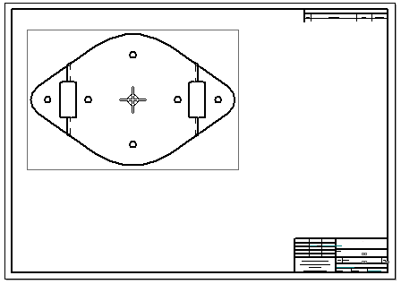
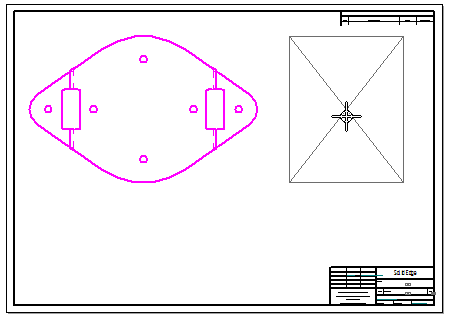
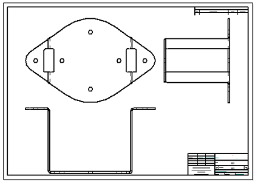
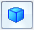

Create drawing views of a part with the View Wizard
-
Choose Home tab→Drawing Views group→View Wizard
 .
. -
(Select a model) In the Select Model dialog box, select a part (.par) or sheet metal (.psm) document, and then click Open.
The View Wizard command bar is displayed, and a preview of the model view is shown on the sheet. The default drawing view orientation is based on the type of model you selected and the drawing template you are using. If you select an assembly model instead of a part or sheet metal model, then the default view that is previewed is an isometric view.
Example:For a part model or an as-designed sheet metal model, a front view is created. This example shows a VHL preview of the part view using dynamic display mode.

-
(Place the primary view) Do one of the following:
-
If the drawing view is formatted the way you want it to be, then move the view where you want to place it and click.
-
To change the view orientation, apply shading, or change the drawing view scale, select options on the View Wizard command bar to adjust the formatting, and then click to place the view.
For more information about these options, see Tips, below.
-
-
(Place additional views) Continue placing orthographic or isometric views by clicking above or below, to the right or left, or diagonally with respect to the initial view.
Example:

-
When you are finished creating drawing views, press Esc to exit the Drawing View Wizard.
An alternative way to create drawing views of the model
-
Instead of selecting the View Wizard command from the ribbon, you can quickly create drawing views of a model by dragging a model document from the Library pane or from Windows Explorer onto the drawing sheet. Drawing views are created automatically.
-
You can use the Undo command to remove a drawing view that you created.
Changing view direction and orientation
-
When a principal drawing view is selected, you can change the drawing view direction and orientation using either of the following options on the command bar.
-
Click View Direction

, and then select a default view or a named view from the list. -
Click Drawing View Layout
 , and then select the Custom button in the Drawing View Creation Wizard (Drawing View Layout). This displays the part view in the Custom Orientation dialog box, where you can choose a default or custom view orientation, rotate the
model, and align the model to a face or an edge to an axis. You also can create a perspective drawing view.
, and then select the Custom button in the Drawing View Creation Wizard (Drawing View Layout). This displays the part view in the Custom Orientation dialog box, where you can choose a default or custom view orientation, rotate the
model, and align the model to a face or an edge to an axis. You also can create a perspective drawing view.
-
Selecting additional drawing views
-
Another way to create drawing views folded from the primary view is to use the Drawing View Wizard (Drawing View Layout ) dialog box. Click the Drawing View Layout
option on the View Wizard command bar, and then select a primary view direction from the Primary View list, and select any additional views you want to generate on the sheet.
Specifying a drawing view preview type
-
The Dynamic display option on the Drawing View Wizard tab (Solid Edge Options dialog box) controls whether the drawing view is displayed using VHL preview mode while you move the cursor to define the views. You can set this option by model type and size. For more information, see Specifying a preview type for drawing views.
Specifying drawing view properties based on model type
-
Before you place a drawing view, you can select the Drawing View Wizard Options button on the command bar to specify additional content and display options for it based on the model type and the view type. For a sheet metal model, you can choose as-designed, simplified, or flattened, specify hidden and tangent edge display, and include model dimensions and annotations.
Change the drawing view formatting
-
After placing a drawing view, you can select it and then modify its formatting using the options on the Drawing View Selection command bar.
Set the drawing view scale
-
By default, the View Wizard calculates the best fit for the drawing views based on the model size and the sheet size. You can change the drawing view scale by:
-
Choosing a different scale from the Scale list.
-
Setting the drawing view scale to match the current sheet scale. To do this, click the Set View Scale button.
For more information, see Sheet scale and drawing view scale.
-
Controlling drawing view caption display
-
Drawing view captions may be turned off and on for a selected drawing view using the Show Caption button on the command bar. You also can modify the default caption by typing in the Caption box on the command bar, or using the Drawing View Properties dialog box.
For more information, see Modifying captions.
How do I
Change drawing view orientationLook up more details
Creating drawing views from a model dragged onto a sheetView Wizard command
View Wizard command bar
Drawing View Selection command bar
Quick links
Drawing production workflowsSheet scale and drawing view scale
Add custom drawing view scales to Solid Edge
Modifying captions
Drawing view properties
Drawing View Properties dialog box
Drawing view manipulation
Drawing View Wizard tab (Solid Edge Options dialog box)